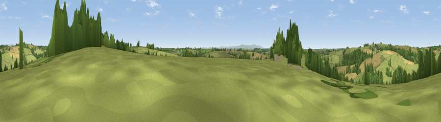

Viewpoint near Chawleigh
#27824 in England · top 50% of its area beats it · near ChawleighThe view, rendered

A 360° render of this exact spot computed from the terrain model, tree cover and land cover — summer colours, afternoon light, calibrated against photographs of famous viewpoints. Real trees, hedges and buildings will differ in detail.
The panorama
Grey silhouette: terrain skyline in each direction (720 bearings, Earth curvature and refraction included). Dashed green: skyline with trees (+15 m) and buildings (+8 m) as obstacles. Blue strip: how far the ground is visible on each bearing.
Where the view opens
Wedge length = distance to the farthest visible ground on that bearing (vegetation-aware). Rings at 10, 25 and 50 km.
What fills the view
64% grassland · 18% woodland · 17% cropland
Angular shares of the visible panorama (visual magnitude), not map area. Landscape diversity 0.40 (0–1 Shannon).
Key numbers
More beautiful places nearby
The staircase of upgrades: each row has a higher view potential than everything closer. Driving times are estimates from straight-line distance, calibrated against real road routing — check an actual route before setting out.
| Place | Direction | Drive | Score |
|---|---|---|---|
| Viewpoint near Chawleigh | ESE · 1 km | ~4 min | 48.1 |
| Viewpoint near Chulmleigh | NW · 2 km | ~6 min | 62.4 |
| Viewpoint near George Nympton | NNW · 7 km | ~14 min | 65.8 |
| Viewpoint near Burrington | WNW · 9 km | ~17 min | 66.4 |
| Viewpoint near Stags Head | N · 14 km | ~26 min | 68.1 |
| Yollacombe Hill | NNW · 16 km | ~28 min | 70.2 |
| Viewpoint near Landkey | NW · 19 km | ~32 min | 74.0 |
| Codden Hill | NW · 20 km | ~33 min | 81.3 |
50.91755, -3.83476 · source: screening · position refined by local search. Computed location — check access rights before visiting.